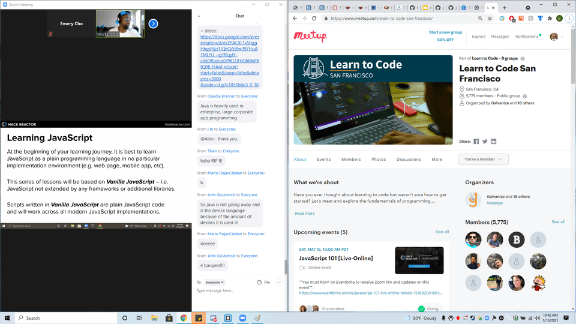
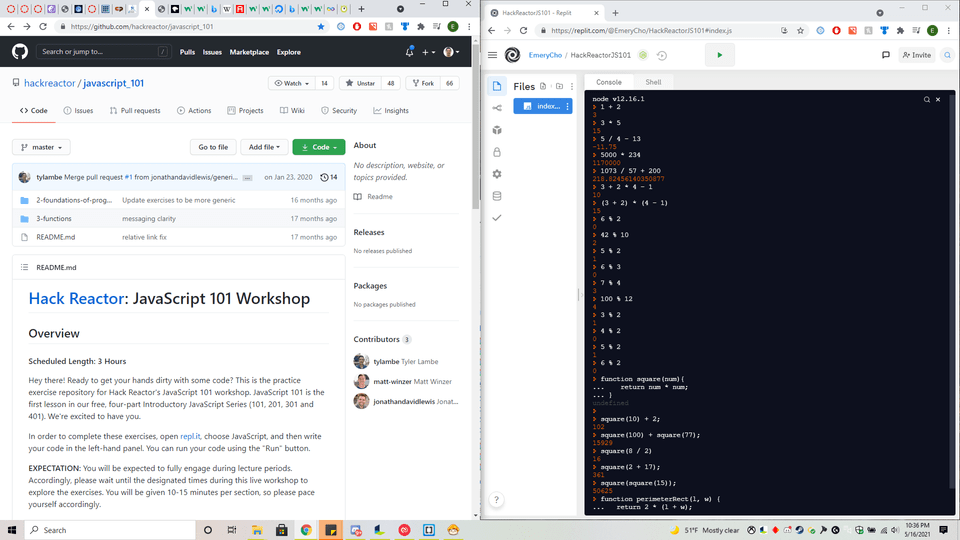

Galvanize JavaScript 101 Workshop
This meetup group is the Learn to Code San Francisco group that is being run by Galvanize, which is responsible for running one of the best coding bootcamps (HackReactor). This workshop, also run by Galvanize, is the first of a series of 4 weekly workshops that gives free lessons on JavaScript. Each workshop of the series takes place on consecutive Saturday mornings, although the series doesn't cycle back to the first one on consecutive weeks, so anyone interested in learning will have to check the meetup for when the workshop series is taking place. There are also many other events and workshops taking place that are not limited to JavaScript.
Since I have some exposure to JavaScript back when I was in another bootcamp (although I didn't have that good of a grasp of JavaScript upon completing the bootcamp), this is kind of a refresher course to me. The JavaScript 101 workshop teaches the foundations and history of JavaScript. In addition to the brushing up on code, this workshop is also good for up and coming devleopers who have some experience in HTML and CSS, while giving them what they need to take their skills to the next level.
If anyone is interested in a meetup group to help them keep up with everything related to web development, I would suggest them to join the meetup and their events.